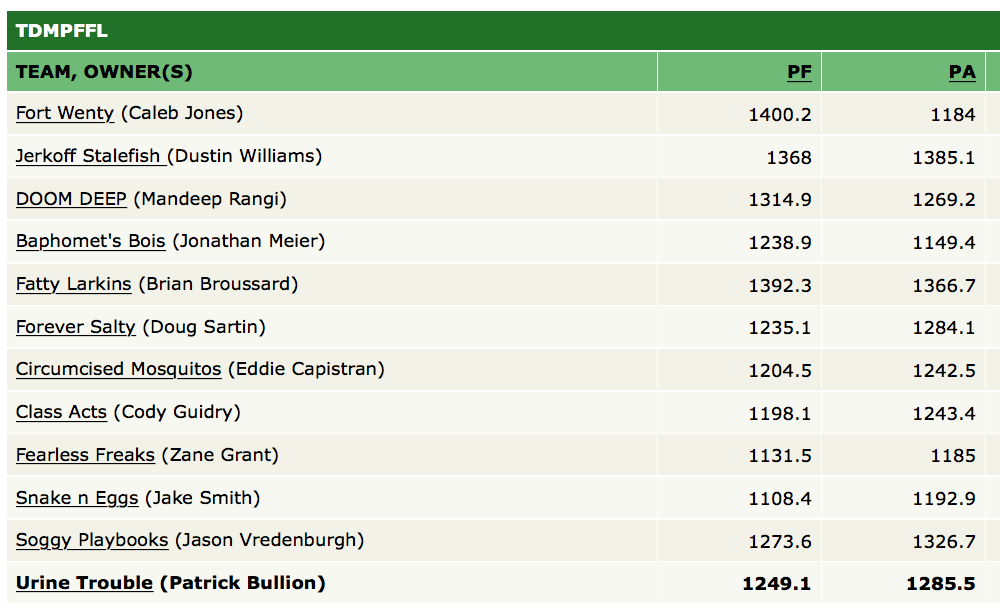

Once upon a time, long ago, a group of bored men decided that they were sick and tired of just “watching” football. They wanted to have something on the line, to add significance to ALL games, not just their favorite teams. They had no real reason to watch the Browns vs the Dolphins, and no sane man would.
So these brave men took action and got to work creating fantasy football in their garage. It caught on like wildfire.
History had been changed forever. Women were trembling in their pantyhose just knowing that man had finally done it. There was now a reason to watch every single football game of the week, unbothered by their domestic partners for fear of getting rekt.
However, the story does not end here…
Some 20 odd years later, with the help of the internet, the sport has transformed into a global juggernaut.
Not realizing that the pinnacle of Fantasy Football had yet to be reached, 10 brave men, comprising of friends and even a few strangers, assembled in what appeared to be “just another Fantasy league.” It didn’t take long for the members inquisitive nature to bubble to the surface. The simple league was just not fulfilling enough for them. They yearned for more; ached for it, needed it. With balls of American steel and the addition of two more members, the group combined their passion and started a group chat with all 12 members. Some people called them crazy. They were, but that isn’t the point (we’ll get to that later.)
The group chat was an immediate success yet the members could not deny the sense of emptiness they still felt inside. The heathens had tasted blood and nothing less could satiate them. They needed something more… something with… tits. This led to the Live Draft and nothing would ever be the same again.
But these mother-fuckers STILL could not stop pushing it. They needed more.
It wasn’t punishment enough that some poor jabroni had to come in last place and have everyone laugh at them for how much they sucked at Fantasy Football that season and have their manhood questioned. No. They wanted ultimate justice, which could be summed up in two words: Chicken Bowl. Yes, you heard that right, the person in last place now had to subject themselves to a punishment of the league’s decree. Honestly, it stresses me out just thinking about it.
It cannot go without saying that The League is without its own controversies or RIP-in-peacing but that is neither here nor there. This is a reminder, a monument, to remind any future generations who may read this (or any aliens sorting through our rubble, cataloging our demise) that these brave men went above and beyond the call of duty to strive for something that was truly great and could withstand the test of time… something worthy of the name TDMPFFL.